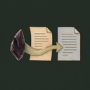
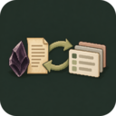

Visual vignette capturing street cats in Istanbul (Jan 2023). Music: Altın Gün (Kolbastı). Filmed on Pixel 7, edited in DaVinci Resolve.
Focus & Background
01 / PROFILEI build data platforms and machine learning systems from initial theoretical foundations to scalable production platforms.
My work spans causal inference on clinical RNA sequencing data, geospatial soil intelligence platforms, and zero-to-one full-stack applications. Outside engineering, I spend time on summits in the Alps, in woodcraft, through auteur cinema, and composing soundscapes.
Engineering Practice
- Full-stack data platforms TypeScript / Python
- Causal ML & high-throughput pipelines PyTorch
- Geospatial analytics & map visualizers Mapbox / GIS
- Cross-platform mobile apps Flutter
Explorations
- Alpine summits & trail running Wilderness
- Visual beauty in complex data Data-Viz
- Auteur & world cinema Film
- Minimalist & electronic sound Synthesis
Ventures & Leadership
02 / VENTURESCTO & Founding Engineer
Scaled from idea to revenue in one year. Architected and engineered the data-driven agricultural soil intelligence platform, processing global datasets with interactive geospatial visualization and farmer-facing analytics.
Founding Engineer
Shipped from 0 to MVP in two quarters. Cross-platform mobile app for personalized skincare, full-stack Firebase architecture, on-device/cloud Computer Vision models for skin analysis, and LLM recommendation agents.
Founding Engineer
Engineered the full-stack B2C platform for immune health, connecting high-throughput automated RNA blood analysis pipelines directly to user-facing applications.
Software Architect Advisor
Advisory on machine learning architecture, MLOps, and scalable software pipelines for clinical RNA sequencing analysis and biomarker discovery.
Career & Education
03 / CV| 2026 — Present | Soilytix — CTO | Soil Intelligence / Next.js |
| 2025 — 2026 | peau.ai — Founding Engineer | Skincare AI / Flutter / Firebase |
| 2024 — 2026 | Muno — Founding Engineer | Immune Health / RNA-Seq |
| 2023 — Present | Soilytix — Founding Engineer | Soil Intelligence / Next.js |
| 2024 — Present | Hummingbird Diagnostics — Architect Advisor | ML Architecture / MLOps |
| 2020 — 2024 | Hummingbird Diagnostics — ML Scientist | Causal ML / PyTorch / Graph Nets |
| 2019 — 2020 | AMLab (Max Welling Lab, UvA) — Research Intern | Deep Learning / SLURM |
| 2019 | BMW Group — ML Engineer Intern | PySpark / Palantir / Dash |
| 2017 — 2018 | Bürgerwerke eG — Full-stack Web Developer | Ruby on Rails |
| 2018 — 2020 | University of Amsterdam — M.Sc. Artificial Intelligence | GPA 4.0/4.0 · cum laude |
| 2014 — 2017 | Heidelberg University — B.Sc. Applied Computer Science | GPA 3.58/4.0 · Computer Vision |
Selected Software & Open Source
04 / CODE
obsidian-typst Obsidian plugin to preview and compile Typst, and export Markdown notes to PDF.
git
TypeScript · Obsidian · Typst

obsidian-notion-sync Opinionated two-way sync between opted-in Obsidian notes and one Notion data source.
git
TypeScript · Obsidian · Notion
git
Python · Slack · Agents
git
JavaScript · Claude · Cursor · Codex
git
Rust · zsh · CLI
git
Python · CLI
git
JavaScript · CLI
web
Hugo · Bulma · PHP
web
Hugo · Open Web
Sound, Cinema & Photography
05 / MEDIAMost likely the first high-quality, non-experimental, fully AI-generated music video in this form, dating to 2020.
Down-tempo for 18 musicians
October 2023
Another Steve Reich's classic, “Music for 18 musicians” as danceable down-tempo. Live recording, played on a Novation Launchpad.
0:00/0:00
ePiano phase
April 2023
Steve Reich's “Piano Phase” adapted for electronica and phased synthesizers.
0:00/0:00
A waltz
October 2022
A gentle chamber waltz composed after watching In the Mood for Love. Scored for Violin, Cello, and Marimba.
Sheet music (PDF) ↗
0:00/0:00
Metropolitan mornings
March 2023
An evolving sonic soundscape and ambient synthesis exploration.
0:00/0:00
A techno
February 2024
Just some techno what else does one need to know.
0:00/0:00
An orchestral
June 2023
Small pick and choose from the symph orchestra.
0:00/0:00
A melodic house
June 2022
Sounds like a certain DJ named after a type of beer involved with a certain label from a big western German city.
0:00/0:00
Interactive Artifacts & Explorations
06 / LABSLive calculators and other standalone investigations.
Netherlands Tax Scenario Simulator (2026) ↗
Interactive Tool
Parametric financial model calculating Dutch Box 1/2/3 taxes, 30% ruling thresholds, and freelance vs. BV dividend distribution optimization with real-time reactive charting.
The Value Ledger ↗
Reading Companion
An interactive compendium to Volume I of Marx's Capital: a clickable concept map tracing the argument from commodity to accumulation, the book's own table of contents, a searchable glossary of 23 terms, and cited passages.
AI Usage Report ↗
Updated Daily
My own LLM token usage and cost over the last 90 days, from platform billing APIs fused with local agent logs, rendered by aiusage. Every cost carries its provenance.
Colophon
07 / IMPRINTSet in Atkinson Hyperlegible. Built with zero tracking, zero cookies, and zero analytics.